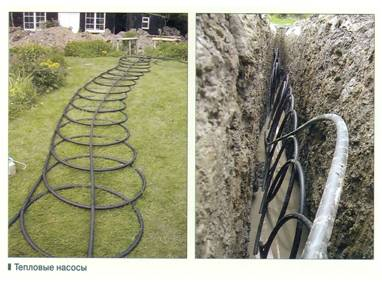
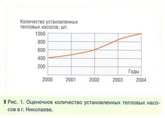
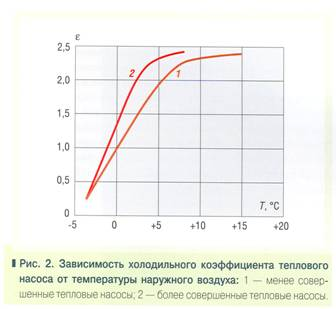
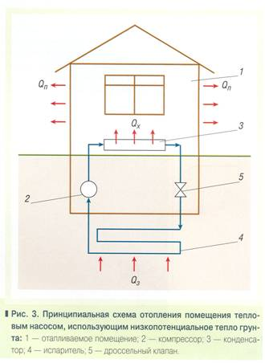
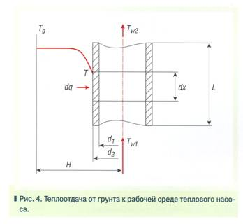

Опыт применения тепловых насосов

Опыт применения тепловых насосов для теплоснабжения в южных районах Украины
Обеспечение теплоснабжения жилых и производственных помещений на основе энергетических технологий с использованием тепловых насосов (ТН) - один из наиболее динамично развивающихся направлений мировой возобновляемой энергетики. Ежегодный рост количества устанавливаемых почти в тридцати странах таких систем оценивается в 10%, а общее число уже работающих ТН приближается к миллиону. Величина установленной тепловой мощности достигает 10100 МВт, а ежегодное производство тепловой энергии составляет около 59000 ТДж (16470 ГВтч) [2]. Наиболее распространенными являются ТН, использующие в качестве внешнего источника тепловой энергии низкопотенциальное рассеянное тепло наружного воздуха (цикл «воздух-воздух») или грунта на небольших глубинах (цикл «грунт-вода»).
Расширение применения в Украине систем теплоснабжения на основе ТН идет, безусловно, недостаточно высокими темпами. Имеются немногочисленные примеры попыток установки таких систем в Крыму, Киеве, Харькове, Приблизительные оценки количества установленных в г. Николаеве ТН фирм Samsung, LG, Panasonic, Dekker, McQuay и др., работающих в режиме «воздух-воздух», приведены на рис. 1.

Представленные на рис. 1 данные являются приблизительными, так как не появляется возможным учесть количество ТН, установленных частными предпринимателями, во владении которых может находиться до 30% объема этого рынка услуг. Наиболее поулярными кондиционерами, работающими врежимах теплового насоса, являются кондиционеры мощностью 9000 BTU (2,6 кВт) и 12000 BTU (3,5 кВт).
Наилучшей областью работы таких ТН является диапазон температур наружного воздуха от 0 до 15°С. Практика показывает, что при температурах окружающего воздуха ниже минус 5°С происходит обледенение поверхностей испарителя, и работа теплового насоса прекращается.

На рис. 2 показано реальное изменение интегрального значения холодильного коэффициента (отношение полезной мощности теплового насоса к затраченной электрической мощности на организацию цикла) с учетом эффекта обледенения теплообменной поверхности испарителя от температуры наружного воздуха.
Как видно из рис. 2, при температурах наружного воздуха ниже 0°С холодильный коэффициент может оказаться меньше 1. При значениях холодильного коэффициента меньше 1 использование теплового насоса нерационально. Проще использовать электрический или другой обогрев помещения. К тому же, обледенение поверхности испарителя может привести к выходу из строя поршневой группы компрессоров.
Приведенный краткий анализ работы ТН цикла «воздух-воздух» служит основой для оценки возможности использования низкопотенциальной энергии грунта.

Схема отопления помещения тепловым насосом, использующим низкопотенциальное тепло грунта, показана на рис. 3. В помещении 1расположен конденсатор рабочей среды теплового насоса (например, хладоны 134, 404, 407 и др.). Сконденсировавшийся хладон поступает через дроссельный клапан 3 в испаритель 4, который расположен в грунте под отапливаемым помещением. Тепло грунта Q3 может быть воспринято рабочим телом в испарителе 4в том случае, если температура испарения рабочего тела ниже температуры грунта. Пары хладона забираются из испарителя 4компрессором 2и подаются в конденсатор 3. Тепло конденсации паров рабочей среды QK поступает в помещение 1. Температура воздуха в помещении предопределяется балансом между поступившим теплом QK и теплопотерями в окружающую среду Qп. Таким образом отбирается низкопотенциальная энергия от грунта для обогрева помещения в холодный период времени. Описанная схема трансформации энергии является самой простой, но она позволяет сформулировать нужный перечень вопросов для оценки возможности применения ее в условиях Украины.
Возможность использования трансформаторов низкопотенциальной энергии поверхностных слоев грунта должна основываться на термодинамическом и технико-экономическом анализе как самих установок трансформации энергии, так и стоимостных характеристик эксплуатации оборудования зданий и сооружений и др.
В первую очередь оценивается энергетический потенциал грунта в месте расположения отапливаемого помещения. Энергетический потенциал грунта во многом зависит от геологии местности, типа грунта и глубины залегания грунтовых вод [1,3,4].

С целью определения теплового потенциала некоторого объема грунта, который может быть использован тепловым насосом, рассматривается механизм теплообмена в системе «грунт – рабочая среда теплового насоса» (рис.4).
Теплоотдача от грунта к рабочей среде теплового насоса определяется балансом тепла, отданного от грунта трубе коллектора теплового насоса, и количеством тепла, принятым рабочей средой теплового насоса. Уравнение теплоотдачи в этом случае имеет следующий вид:

(1)
где Тg– температура грунта,°С;
Т – текущее значение температуры рабочей среды,°С;
Сp– теплоемкость рабочей среды, кДж/(кг / град);
М – массовый расход рабочего тела через поперечное сечение коллектора, кг/с;
dT– изменение температуры рабочей среды на элементарном участке dx,°C;
R– суммарное термическое сопротивление теплоотдачи от грунта рабочей среде теплового насоса.
Полагая, что Сp, MuR - величины постоянные, разделяя переменные и проинтегрировав уравнение (1) в пределах изменения длины коллектора от 0 до Lи температуры рабочей среды от Tw1до Tw2, получим зависимость для расчета температуры рабочей среды теплового насоса на выходе из коллектора:
где

Уравнение (2) показывает, что определяющим параметром для работы теплового насоса, употребляющего низкопотенциальное тепло грунта, является температура грунта и динамика ее изменения. Становится необходимым изучение динамики изменения температуры грунта в зависимости от времени года и глубины.
Солнечная радиация, которая в среднем составляет 1,4 кВт/м2 / сут, формирует запасы низкопотенциального тепла в грунте непосредственно у его поверхности. На сегодняшний день при постоянном росте стоимости традиционных энергоносителей актуальной становится задача определения возможности использования этих запасов низкопотенциального тепла.
Количественной характеристикой запасов этого тепла есть зависимость распределения температуры грунтов от глубины и периода времени года. Динамика изменения температуры грунта на разных глубинах, а также максимальные и минимальные значения температур грунта на его поверхности позволяют определить запасы энергии и в последующем сформулировать требования к тепловым насосам.
Были проведены исследования изменения температуры грунта в г. Николаеве в зависимости от времени года и глубины. Выбор места исследований был основан на необходимости оценки влияния грунтовых вод на температурные поля в слоях грунта. Установлено, что распределение температуры грунта зависит от ряда показателей. А именно, от состава грунта, наличия растительности на поверхности грунта, количества выпавших осадков и др. Замеры температуры проводились на таких глубинах: 0,2; 0,8; 1,2; 3,2 и 8,6 м. На глубине 8,6 м существует водоносный слой. Дебит водоносного слоя составляет около 1 м3/ч. Замеры проводились один раз в неделю в течение одного года.

Так как температура воздуха величина стабильная, то результаты изменения измерений представлены в виде разности температуры грунта (Тg) на установленных глубинах и усредненной температуры воздуха за месяц (Tв) в зависимости от последней. Усредненные данные исследований приведены на рис. 5.
Характер изменения температуры грунта в течение года несколько отличается от характера изменений температуры воздуха. С увеличением глубины наблюдается увеличение инерционности в динамике изменения температуры грунта. Это связано с влиянием тепловых потоков от более глубоких слоев грунта. На глубине 3,2 метра зафиксировано сезонное изменение температуры грунта в диапазоне около 7°С. Сезонные колебания температуры воздуха практически не влияют на температуру грунта на глубинах более 8,6 м. На этой глубине сезонные изменения температуры грунта в пределах от +10 до +12°С. Соответственно, горизонт залегания грунтовых вод на глубине 8,6 м является достаточно мощным аккумулятором низкопотенциальной энергии и оказывает существенное влияние на температурное поле в вышележащих слоях грунта. С точки зрения использования трансформаторов низкопотенциального тепла грунта для целей отопления помещений, становится рациональным дальнейшее проведение исследований температурных полей в грунте при различной глубине залегания грунтовых вод и для различных регионов Украины.
В настоящее время наиболее освоены паровые тепловые насосы. Как правило, рабочей средой таких насосов являются различные хладоны. Марка хладона определяется в основном температурными параметрами цикла трансформации энергии. Исходя из данных динамики сезонного изменения температуры грунта, определяется граничное нижнее значение температуры последнего. Если температура грунта ниже этого значения, то дальнейший отбор тепла от грунта связан с увеличением глубины промерзания его верхних слоев. А это связано с надежностью зданий или сооружений, находящихся над местом расположения коллектора теплового насоса. Расчеты показывают, что значение минимально допустимой температуры грунта должно быть не ниже 5-7°С на глубине до 8 м для регионов Украины, в которых зафиксирована минимальная температура воздуха в зимний период минус 20°С. Если при работе теплового насоса температура грунта становится ниже указанных значений, то происходят существенные отклонения сезонных колебаний температуры грунта от естественных циклов.
Полученное ограничение по минимально допустимой температуре грунта определяет максимальную мощность теплового насоса для конкретного случая его использования.
Теоретическая оценка количества тепла, которое можно снять со 100 м2 поверхности грунта, расположенной параллельно поверхности земли на глубине от 3 до 8 метров, показывает, что оно может обеспечить обогрев 2-3 м2 помещения в течение отопительного сезона без дополнительного аккумулирования энергии. Если обеспечить аккумулирование энергии в этом объеме грунта в летний период, то без дополнительных мер по предотвращению рассеивания тепла можно обеспечить отопление помещения площадью 10 м2 и высотой до 2,7 м. Расчеты, которые выполнялись при температуре наружного воздуха минус 15 “С, показывают, что для отопления 1 м2 помещения в течение всего отопительного сезона необходимо трансформировать тепло 45-50 м3 грунта, лежащего под зданием. Если употреблять в качестве рабочего тела хладоны различных марок, то расход циркулирующего в этом объеме грунта рабочего тела будет составлять около 25-28 кг/ч. Равномерное распределение этого количества рабочего тела по указанному объему грунта есть достаточно сложной инженерной задачей. Таким образом, без концентрирования низкопотенциального тепла весьма проблематично использование трансформаторов тепла для целей отопления помещений.
Одним из эффективных концентраторов низкопотенциального тепла могут быть грунтовые воды, так как они представляют собой в основном подземные потоки. Предварительные расчеты необходимого количества тепла на отопление помещения площадью 250 м2 показывают, что при использовании теплового насоса достаточно 10 м3/ч воды с начальной температурой 10°С. В данном случае температура воды на выходе из испарителя составляет около 7°С, а температура кипения хладагента не понижается ниже 5°С. При таких параметрах холодильного цикла холодильный коэффициент теплового насоса составляет ориентировочно 2,6-2,7. Другими словами, для получения 1 кВт тепловой мощности нужно затратить около 0,4 кВт электрической мощности. А так как вода обладает хорошими теплофизическими свойствами, то испарители будут достаточно компактными и несложными в изготовлении.
Достаточно интересно направление концентрации низкопотенциальной энергии поверхностных слоев грунта путем использования термосифонов.
Употребление энергии из грунта вызывает понижение его температуры в районе размещения испарителя теплового насоса. Но обычно равновесие быстро достигается за счет тепла, поступающего из окружающей среды к месту расположения испарителя. В связи с тем, что коэффициент теплоотдачи от рабочего тела в момент его испарения велик (например, для хладонов 134, 404 и др. он может достигать значений 10000 Вт/(м•К)), то восприятие испарителем тепла грунта определяется его показателями: теплопроводностью, плотностью, теплоемкостью, температуропроводностью и влажностью [1, 3]. Но следует учитывать, что эти параметры нестабильны и зависят от периода времени года, в основном, от количества выпавших осадков и др.
Анализ составляющих термического сопротивления теплоотдачи от грунта рабочей среде теплового насоса показывает, что предельной величиной является термическое сопротивление грунта, прилегающего к поверхности трубы коллектора теплового насоса. Уравнение для расчета наружной теплоотдачи к цилиндрической стенке от окружающей среды имеет такой вид:

где Н – расстояние от поверхности трубы до слоя грунта, в котором градиент температуры стремится к нулю, м;
?g – коэффициент теплопроводности грунта, Вт/мград;
d2– наружный диаметр трубы, м;
Тр – температура на поверхности трубы,°С.
С увеличением наружного диаметра трубы при сохранении ее толщины значение теплового потока увеличивается. Это разрешает сделать предположение о том, что при использовании термосифонов большого диаметра можно значительно увеличить глубину их размещения. А это позволит значительно увеличить площадь грунта, от которого можно отбирать тепловым насосом низкопотенциальное тепло.
Проектирование и внедрение в промышленное использование тепловых насосов с термосифонными концентраторами низкопотенциального тепла грунта требует проведения предварительных теоретических и экспериментальных исследований процессов тепло- и массообмена в таких термосифонных концентраторах низкопотенциального тепла грунта.
Выводы
Употребление низкопотенциальной энергии грунта без дополнительной
аккумуляции тепла (например, солнечной энергии) в летний период
нерационально.
Проведенный предварительный анализ помогает сделать вывод о
целесообразности проведения дальнейших исследований применения тепловых
насосов для обогрева помещений при использовании
низкопотенциального тепла грунтовых вод или термосифонных концентраторов
низкопотенциального тепла грунта.